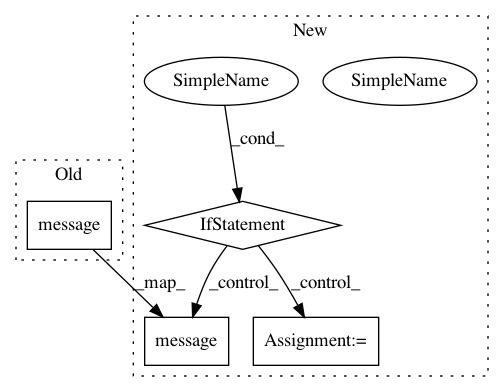

33983c319ee3e542f8fef814a43191858685cfb6,lingpy/convert/gml.py,,gls2gml,#Any#Any#Any#Any#,22
Before Change
f.write(line+"\n")
f.close()
FileWriteMessage(filename,"gml").message("written")
return g
def nwk2gml(
After Change
//if "label" not in data:
g.add_edge(edgeA,edgeB,**data)
if filename:
f = open(filename+".gml","w")
for line in nx.generate_gml(g):
f.write(line+"\n")
f.close()
FileWriteMessage(filename,"gml").message("written")
return g
def nwk2gml(
treefile,
In pattern: SUPERPATTERN
Frequency: 3
Non-data size: 4
Instances
Project Name: lingpy/lingpy
Commit Name: 33983c319ee3e542f8fef814a43191858685cfb6
Time: 2013-05-21
Author: mattis.list@posteo.de
File Name: lingpy/convert/gml.py
Class Name:
Method Name: gls2gml
Project Name: lingpy/lingpy
Commit Name: f98b95989caeb104355ad50146906e242579705f
Time: 2013-04-08
Author: mattis.list@posteo.de
File Name: lingpy/convert/gml.py
Class Name:
Method Name: nwk2gml
Project Name: lingpy/lingpy
Commit Name: ee82bd5e240577aa9091a05e9dc3fa6d3ba221d3
Time: 2013-05-15
Author: mattis.list@posteo.de
File Name: lingpy/convert/gml.py
Class Name:
Method Name: gls2gml